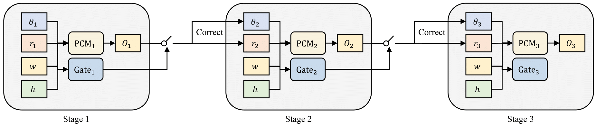
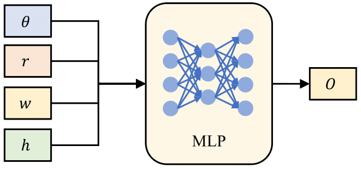
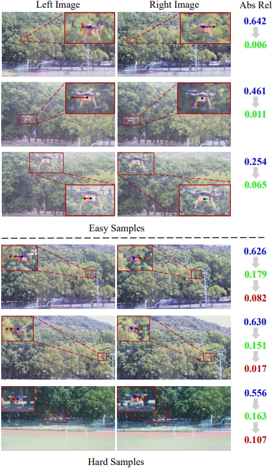
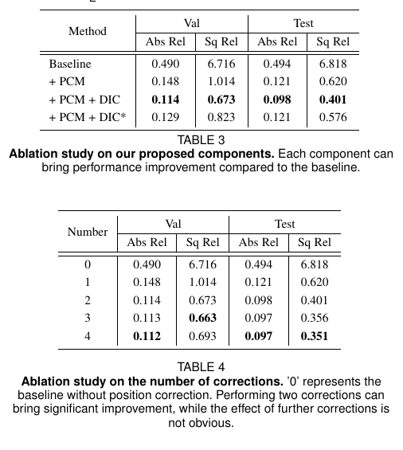
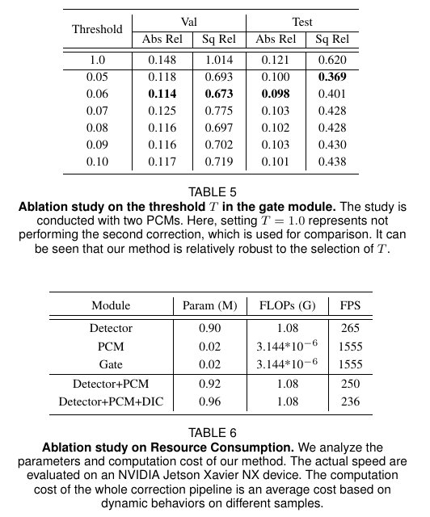

<!DOCTYPE html
    PUBLIC "-//W3C//DTD XHTML 1.0 Transitional//EN" "http://www.w3.org/TR/xhtml1/DTD/xhtml1-transitional.dtd">
<html xmlns="http://www.w3.org/1999/xhtml">

<head>

    <meta http-equiv="Content-Type" content="text/html; charset=UTF-8">
    <title>Why does Stereo Triangulation Not Work in UAV Distance Estimation </title>

    <style>
        h1 {
            font-family: 'Times New Roman', Times, serif;
            font-size: 32px;
            font-style: normal;
            font-weight: lighter;
            font-variant: small-caps;
        }
​
        h2 {
            font-family: 'Times New Roman', Times, serif;
            font-size: 32px;
            font-style: italic;
            font-weight: bold;
        }
​
        h3 {
            font-family: 'Times New Roman', Times, serif;
            font-size: 32px;
            font-style: oblique;
            font-weight: bolder;
        }
​
        p {
            font: italic small-caps bold larger 仿宋;
        }
    </style>

    <!-- Meta tags for search engines to crawl -->
    <meta name="robots" content="index,follow">
    <meta name="description" content="Video-Inpainting.&gt;
&lt;meta name=" keywords"="">

    <!-- Fonts and stuff -->
    <link href="./resource/css" rel="stylesheet" type="text/css">
    <link rel="stylesheet" type="text/css" href="./resource/project.css" media="screen">
    <link rel="stylesheet" type="text/css" media="screen" href="./resource/iconize.css">
    <script type="text/javascript" async="" src="./resource/ga.js.download"></script>
    <script async="" src="./resource/prettify.js.download"></script>

    <link rel="stylesheet" href="https://cdnjs.cloudflare.com/ajax/libs/KaTeX/0.12.0/katex.min.css" integrity="sha384-fhYLJZkbU8EZ0R6AxN8I6YTILgGrhYZVXZ2j24MVKSTOvqtCPcd6yAevPl+4TuRW" crossorigin="anonymous">
    <script src="https://cdnjs.cloudflare.com/ajax/libs/KaTeX/0.12.0/katex.min.js" integrity="sha384-XI4F3vouKmuyjRcSjWc2mNMaUZFby1FYX0GHoDcgD4TL8O6cWsDHdNp3Zu9SS3hR" crossorigin="anonymous"></script>

    <script type="text/javascript">

        var _gaq = _gaq || [];
        _gaq.push(['_setAccount', 'UA-22940424-1']);
        _gaq.push(['_trackPageview']);

        (function () {
            var ga = document.createElement('script'); ga.type = 'text/javascript'; ga.async = true;
            ga.src = ('https:' == document.location.protocol ? 'https://ssl' : 'http://www') + '.google-analytics.com/ga.js';
            var s = document.getElementsByTagName('script')[0]; s.parentNode.insertBefore(ga, s);
        })();

    </script>

</head>

<body>
    <div id="content">
        <div id="content-inner">

            <div class="section head">
                <h1>Why does Stereo Triangulation
 <br>Not Work in UAV Distance Estimation</h1>

                <div class="authors">
                    <a href="https://scholar.google.com/citations?user=KbWzCu4AAAAJ&hl=zh-CN">Jiafan
                        Zhuang</a>&nbsp;&nbsp;&nbsp;&nbsp;&nbsp;
                    <a href="https://scholar.google.com/citations?user=tMO7jm4AAAAJ&hl=zh-CN">Duan Yuan</a>&nbsp;&nbsp;&nbsp;&nbsp;&nbsp;
                    <a href="https://scholar.google.com/citations?user=6BPcMvIAAAAJ&hl=zh-CN">Rihong Yan</a>&nbsp;&nbsp;&nbsp;&nbsp;&nbsp;
                    <a href="https://scholar.google.com/citations?user=KbWzCu4AAAAJ&hl=zh-CN">Xiangyu Dong</a>&nbsp;&nbsp;&nbsp;&nbsp;&nbsp;
                    <a href="https://scholar.google.com/citations?user=KbWzCu4AAAAJ&hl=zh-CN">Yutao Zhou</a>&nbsp;&nbsp;&nbsp;&nbsp;&nbsp;
                    <a href="https://scholar.google.com/citations?user=KbWzCu4AAAAJ&hl=zh-CN">Weixin Huang</a>&nbsp;&nbsp;&nbsp;&nbsp;&nbsp;
                    <a href="https://scholar.google.com/citations?user=KbWzCu4AAAAJ&hl=zh-CN">Wenji Li</a>&nbsp;&nbsp;&nbsp;&nbsp;&nbsp;
                    <a href="https://scholar.google.com/citations?user=KbWzCu4AAAAJ&hl=zh-CN">Zhun Fan</a>&nbsp;&nbsp;&nbsp;&nbsp;&nbsp;

                </div>

                <div class="affiliations">
                    <sup>1</sup> <a href="http://imagelab.stu.edu.cn/index.jsp" target="_blank">Image Lab,ShanTou University</a> &nbsp;&nbsp;&nbsp;&nbsp;&nbsp; <br>
                </div>

                <div class="venue"></div>
            </div>


            <div class="section demo">
                <br>
                <center><iframe width="840" height="480" src="https://www.youtube.com/embed/DsyK0rXThcM">
                    </iframe></center>
                <br>
                <center>
                    <a href="https://www.dropbox.com/s/40rnzbhn1hgb58y/demo.mp4?dl=0"> Download
                        Demo Video</a>
                </center>
            </div>

            <div class="section abstract">
                <h2>Abstract</h2>
                <br>
                <p>

    	 Distance estimation plays an important role for path planning
and collision avoidance of swarm UAVs. However, the lack of annotated
data seriously hinders the related studies. In this work, we build and
present a UAVDE dataset for UAV distance estimation, in which distance
between two UAVs is obtained by UWB sensors. During experiments,
we surprisingly observe that the stereo triangulation cannot stand for
UAV scenes. The core reason is the position deviation issue due to
long shooting distance and camera vibration, which is common in UAV
scenes. To tackle this issue, we propose a novel position correction
module, which can directly predict the offset between the observed
positions and the actual ones and then perform compensation in stereo
triangulation calculation. Besides, to further boost performance on hard
samples, we propose a dynamic iterative correction mechanism, which
is composed of multiple stacked PCMs and a gating mechanism to
adaptively determine whether further correction is required according
to the difficulty of data samples. We conduct extensive experiments on
UAVDE, and our method can achieve a significant performance improvement over a strong baseline (by reducing the relative difference from
49.4% to 9.8%), which demonstrates its effectiveness and superiority.
The code and dataset are available at https://XXX.

                </p>
            </div>

            <div class="section framework">
                <h2>Framework</h2>
                <br>
                <center></center>
                <center></center>

                <br>
                <p>
                    In this paper, we focus on the UAV distance estimation problem, which is practically important but rarely studied. To aid the study, we build a novel UAVDE dataset, and surprisingly find that the commonly used stereo triangulation paradigm does not work in UAV scenes. The main reason is the position deviation issue caused by the small baseline-to-depth ratio, large focal length and the vibrations on camera system, which are common in UAV scenes. To tackle this issue, we propose a novel position correction module (PCM) to explicitly predict the offset between the observed and actual positions of the target UAV, which is used for compensation in stereo triangulation calculation. Besides, we design a dynamic iterative correction (DIC) mechanism to further improve the correction effect on hard samples. Extensive experiments validate the effectiveness and superiority of our method.
                </p>
            </div>

            <div class="section visualization">
                <h2>Experimental Results</h2>

                Since dense distance annotations from LiDAR is unavailable in
                UAV scenes, existing learning-based methods are not applicable.
                To demonstrate the superiority of our method, we make a comparison with two popular classical methods, i.e., ADCensus and
                ELAS, which do not rely on dense annotations. Particularly,
                we reproduce these methods according to their official codes on
                the proposed UAVDE dataset for fair comparison.
                The performance comparison is shown in TABLE ??. Here,
                Baseline and Baseline* represent stereo triangulation on UAV detection results and annotated bounding boxes, respectively. From
                the results, we have the following observations. First, classical
                methods perform poorly on UAV scenes. They are affected by
                environmental interference, which results in error-prone disparity
                estimation. Second, baseline performs better than classical methods benefited from the robustness of deep learning model, i.e.,
                the YOLOX. However, it still suffers from the position deviation
                issue. Annotated bounding boxes can only slightly improve the
                performance, which indicates that we can not tackle this issue by
                using a stronger detector. Third, our proposed method can significantly outperform its counterparts by over 39.0% improvement
                by compensating the position deviation, which demonstrates its
                superiority and effectiveness

                <!-- <h3>Cityscapes</h3> -->
                <br>
                <center></center>
                <center></center>
                <center></center>

                <!-- <h3>CamVid</h3>
                <br>
                <center></center>
                <center></center>
                <center></center>
                <center></center> -->

            </div>

            <div class="section materials">
                <h2>Materials</h2>
                <center>
                    <ul>

                        <li class="grid">
                            <div class="griditem">
                                <a href="https://arxiv.org/abs/2006.10380" target="_blank" class="imageLink"></a><br>
                                <a href="https://arxiv.org/abs/2306.08939" target="_blank">Paper</a>
                            </div>
                        </li>
                        &nbsp;&nbsp;&nbsp;&nbsp;&nbsp;&nbsp;&nbsp;&nbsp;&nbsp;&nbsp;&nbsp;&nbsp;&nbsp;&nbsp;&nbsp;&nbsp;&nbsp;&nbsp;

                        <li class="grid">
                            <div class="griditem">
                                <a href="https://github.com/jfzhuang/DAVSS"></a><br>
                                <a href="https://github.com/jfzhuang/DAVSS">Codes</a>
                            </div>
                        </li>

                    </ul>
                </center>
            </div>

            <br>

            <div class="section citation">
                <h2>Citation</h2>
                <div class="section bibtex">
                    <pre>@misc{zhuang2023does,
                        title={Why does Stereo Triangulation Not Work in UAV Distance Estimation},
                        author={Jiafan Zhuang and Duan Yuan and Rihong Yan and Xiangyu Dong and Yutao Zhou and Weixin Huang and Zhun Fan},
                        year={2023},
                        eprint={2306.08939},
                        archivePrefix={arXiv},
                        primaryClass={cs.CV}
                  }</pre>
                </div>
            </div>

        </div>
    </div>
</body>

</html>
